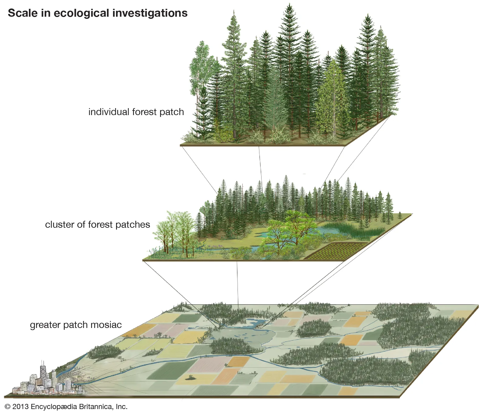

Semana 6: Escala de Paisagem e Seleção de Áreas
Curso de Ecologia da Restauração - UFPE
Slides da Aula
1 Introdução: A Transição da Escala Local para a Escala de Paisagem

A ecologia de paisagem examina como a heterogeneidade espacial — composta por um mosaico de manchas (patches) imersas em uma matriz alterada — influencia a distribuição de organismos, os fluxos de matéria e energia e a dinâmica ecológica regional. Historicamente, as iniciativas de restauração eram planejadas de forma isolada, concentrando-se em parcelas locais. No entanto, o paradigma contemporâneo estabelece que a recuperação sustentável da biodiversidade e dos serviços ecossistêmicos exige o planejamento integrado na escala de paisagem.
Essa abordagem integrada fundamenta o conceito de Restauração de Paisagens Florestais (Forest Landscape Restoration — FLR), definido como um processo planejado que visa recuperar a integridade ecológica e aumentar o bem-estar humano em paisagens desmatadas ou degradadas. O Princípio 7 dos Padrões Internacionais da Society for Ecological Restoration (SER) reforça que a restauração adquire valor cumulativo quando projetada em larga escala, pois os processos ecológicos fundamentais — como fluxo gênico, dispersão de sementes, teias tróficas e regimes de distúrbio — operam na escala da bacia hidrográfica e do território.
2 Conectividade Ecológica, Fragmentação e Efeitos de Borda
A conversão histórica de ecossistemas nativos para uso agropecuário resulta em paisagens hiper-fragmentadas, reduzindo a cobertura vegetal a remanescentes isolados imersos em matrizes antrópicas.
2.1 Conectividade e Fluxo Gênico
A perda de conectividade interrompe o trânsito da fauna e a dispersão de propágulos, isolando populações e aumentando o cruzamento endogâmico. Para restabelecer a ligação entre Unidades de Conservação, Áreas de Preservação Permanente (APPs) e Reservas Legais (RLs), adotam-se: * Corredores Ecológicos: Faixas contínuas de vegetação nativa que interligam fragmentos. * Trampolins Ecológicos (Stepping Stones): Manchas intermediárias de habitat que facilitam a movimentação da fauna em matrizes agrícolas.
2.2 Permeabilidade da Matriz
O aumento da permeabilidade da matriz produtiva por meio de sistemas agroflorestais (SAFs), silvicultura diversificada e cercas vivas amplia o trânsito de organismos sem exigir a conversão total de terras agrícolas.
2.3 Efeitos de Borda e Invasão Biológica
Fragmentos pequenos ou de formato irregular possuem uma elevada razão borda/interior. A maior exposição à radiação solar e ao vento nas bordas vizinhas a pastagens gera estresse microclimático e favorece a incursão de espécies exóticas invasoras (como gramíneas dos gêneros Brachiaria e Panicum), alterando a sucessão e sufocando a regeneração natural.
3 Dinâmica Espaço-Temporal: Colonização, Dispersão e Metapopulações
A manutenção da biodiversidade em paisagens fragmentadas apoia-se em conceitos fundamentais da ecologia teórica:
- Dinâmica de Metapopulações: A persistência regional de uma espécie depende do balanço entre extinções locais e recolonizações a partir de fragmentos conservados (“áreas-fonte”).
- Limitação de Dispersão (Seed and Recruitment Limitation): Em sítios isolados, a ausência de plântulas de espécies tardias ocorre frequentemente pela falta de dispersores (aves e mamíferos frugívoros) ou pela distância excessiva em relação aos remanescentes florestais.
- Débito de Extinção (Time-lag): A resposta da biota ao isolamento não é imediata; fragmentos podem reter temporariamente populações viáveis que estão fadadas à extinção local se a conectividade não for restabelecida a tempo.
4 Diagnóstico da Restaurabilidade e Potencial de Resiliência
A restaurabilidade de um sítio degradado depende do seu potencial de resiliência, definido como a capacidade autônoma do ecossistema de recuperar seus atributos estruturais e funcionais após um distúrbio.
O diagnóstico técnico para o Projeto de Recomposição de Áreas Degradadas e Alteradas (PRADA) exige diferenciar duas dimensões de resiliência:
DIAGNÓSTICO INICIAL (Isolamento de Fatores de Degradação)
│
┌────────────────────────────┴────────────────────────────┐
▼ ▼
RESILIÊNCIA LOCAL (Curto Prazo: 0-2 anos) RESILIÊNCIA DA PAISAGEM (Médio/Longo Prazo)
(Banco de sementes autóctone, chuva local e rebrotas) (Chegada de propágulos via conectividade regional)
│ │
┌───────┴───────┐ ┌───────┴───────┐
▼ ▼ ▼ ▼
ALTA BAIXA ALTA BAIXA
(Regeneração (Necessidade de (Enriquecimento (Necessidade de
Natural / Recobrimento Natural por Enriquecimento
Condução) Artificial / Dispersão) Artificial /
Plantio Total) Mudas/Sementes)- Resiliência Local (Curto Prazo: 0 a 2 anos): Avaliada após o isolamento da área (cercamento do gado, combate a incêndios e suspensão do uso do solo). Depende do banco de sementes no solo, capacidade de rebrota de raízes/troncos e proximidade imediata de matrizes. Determina se a fase de recobrimento do solo será natural (restauração passiva) ou artificial (plantio total/semeadura).
- Resiliência da Paisagem (Médio e Longo Prazo: > 3 anos): Avaliada na fase de consolidação do dossel. Depende do contexto da matriz e da conectividade com florestas vizinhas. Determina se o enriquecimento com espécies tardias da diversidade ocorrerá de forma natural (via fauna) ou exigirá a introdução artificial de sementes e mudas.
5 Priorização Espacial e Seleção de Áreas
Devido a limitações orçamentárias e operacionais, o planejamento exige ferramentas de priorização espacial explícita para alocar projetos onde os ganhos ecológicos e sociais sejam maximizados.
5.1 Critérios de Seleção
- Conectividade Ciliar e Topográfica: Alocação prioritária em Áreas de Preservação Permanente (APPs) ao longo de cursos d’água para formação de corredores ecológicos contínuos.
- Proteção de Solo e Água: Recuperação de encostas de alta declividade e cabeceiras de nascentes para prevenção de erosão e recarga de aquíferos.
- Custo-Efetividade: Escolha de áreas com resiliência intermediária ou bordas de fragmentos conservados, reduzindo os custos de implantação e manutenção.
- Adequação Ambiental do Imóvel Rural: Integração do Cadastro Ambiental Rural (CAR) e dos PRADAs para regularização de passivos do Código Florestal (Lei 12.651/2012).
5.2 Mecanismos Econômicos e Sociais
A sustentabilidade dos projetos requer o envolvimento dos proprietários rurais. Instrumentos como o Pagamento por Serviços Ambientais (PSA) e a Cota de Reserva Ambiental (CRA) valorizam o serviço ecológico prestado, transformando a restauração em uma oportunidade de desenvolvimento socioeconômico no campo.
6 Ficha de Síntese para Avaliação Rápida em Campo
| Atributo de Paisagem | Indicador Diagnóstico | Implicação no PRADA |
|---|---|---|
| Distância de Remanescentes | < 100 m vs. > 1000 m da floresta nativa. | Avalia a probabilidade de chuva de sementes (Passiva vs. Ativa). |
| Uso Entorno / Matriz | Pastagem limpa, silvicultura, SAFs ou lavoura. | Define ações de cercamento, aceiros e barreira contra invasoras. |
| Razão Área/Perímetro | Formato e tamanho do fragmento. | Orienta o estabelecimento de zonas de amortecimento (buffer zones). |
| Banco / Rebrota Local | Presença de plântulas e rebrota de raízes no solo. | Define a necessidade de condução da regeneração natural ou plantio. |
7 Bibliografia Sugerida
- BRASIL. Lei nº 12.651, de 25 de maio de 2012. Dispõe sobre a proteção da vegetação nativa. Brasília, DF: Diário Oficial da União, 2012.
- CAIAFA, A. N. et al. A restauração ecológica no contexto da paisagem: o caso do Recôncavo Sul Baiano. In: DUARTE, E. F. (Org.). Recursos e estratégias para a restauração florestal. Cruz das Almas: EDUFRB, 2016. p. 105-134.
- CROUZEILLES, R. et al. Ecological restoration success is higher for natural regeneration than for active restoration in tropical forests. Science Advances, v. 3, e1701345, 2017.
- ELIAS, M. et al. Restoration for Whom, by Whom? A Feminist Political Ecology of Restoration. Ecological Restoration, v. 39, p. 3-26, 2021.
- GANN, G. D. et al. International principles and standards for the practice of ecological restoration. 2. ed. Restoration Ecology, v. 27, p. S1-S46, 2019.
- NAVE, A. G. et al. Manual de Restauração Ecológica: técnicos e produtores rurais no Extremo Sul da Bahia. Piracicaba: Bioflora / LERF / MPBA, 2016.
- RICKLEFS, R. E. A Economia da Natureza. 7. ed. Rio de Janeiro: Guanabara Koogan, 2014.
- YOUNG, T. P. et al. The ecology of restoration: historical links, emerging issues and unexplored realms. Ecology Letters, v. 8, p. 662-673, 2005.